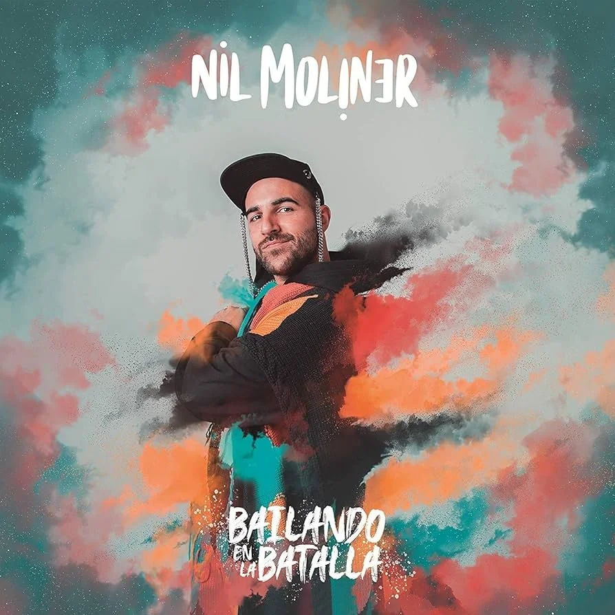

Premios
- Con su single «Soldadito de Hierro (feat. Dani Fernández) ha ganado el certificado de Triple Disco de Platino en España
- Cuenta ya con varios Disco de Platino por Mi Religión (x2), «Bailando, «Esperando, «Libertad (x2)
- Cuenta con varios Discos de Oro por El Despertar, Por Última Vez, Hijos de la Tierra, Sin Tu Piel, Cien por cien, Se Me Va y Mejor así, y el más reciente con Meneito junto al colombiano Yera
Discografía de Nil Moliner
